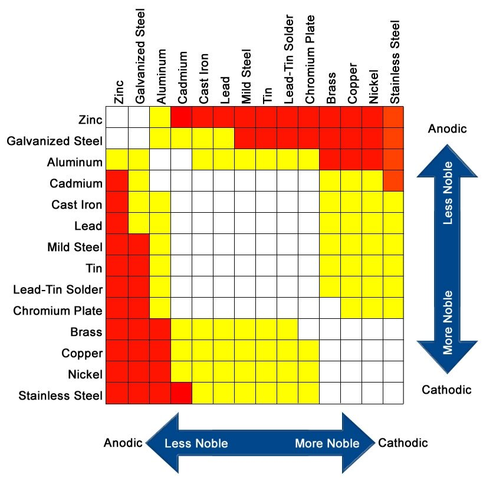

effect of combining dissimilar metals
Take care when choosing hardware and fasteners for your boat. When dissimilar metals are placed in contact with each other, introducing an electrolyte(like fresh or saltwater) will trigger corrosion.
When water(electrolyte) is introduced onto metals that are very galvanically incompatible(ex: stainless steel and galvanized steel), one metal becomes a negatively-charged cathode, and the other a positively-charged anode. Electrons flow from the one to the other by way of the electrolyte. The two metals act as a battery and transfer electrons from one(the cathode) to the other(the anode). [Source]
When selecting hardware aim for metals that are white(safe) in the following chart, do not mix metals intersecting at red(very problematic) or yellow(problematic).
 Author and source of above chart unknown